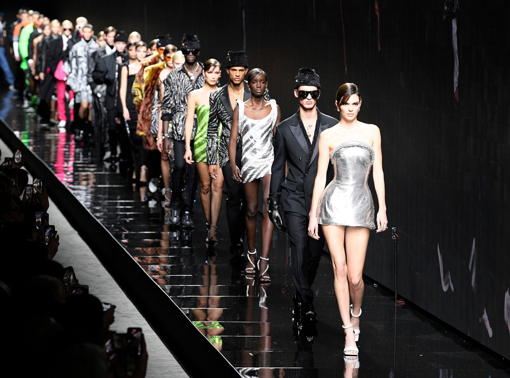
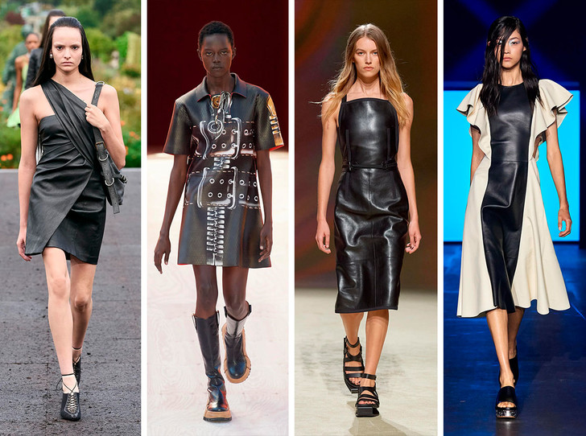
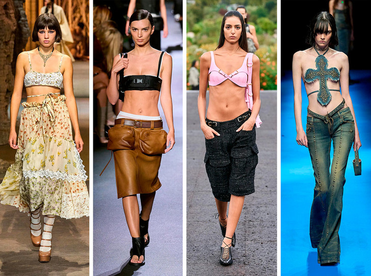
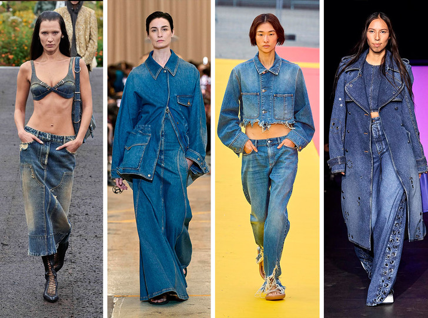
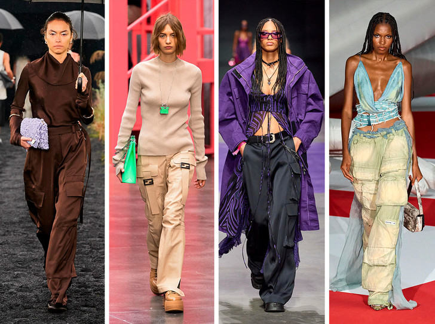

Женская мода:
Женская мода 2023
 Нулевые, бельевой стиль и низкая посадка все еще стоят во главе модных тенденций. Креативные директора брендов черпают вдохновение в трендах прошлых модных эпох, переосмысливая их на современный лад. Весна и лето 2023 ожидаются женственными, дерзкими и романтичными..
Кожаное платье
 Некоторые вещи из весенне-летних линеек вполне можно носить уже сейчас. Например, кожаное платье, которое появилось чуть ли ни в каждой второй коллекции. Креативные директора брендов показали свои версии этого предмета гардероба, поработав с кроем и силуэтом. Среди новинок можно найти модели на одно плечо, приталенного кроя без бретелей, платья-футболки с принтом и двухцветные вариации.
Кроп-топы и бра
 Блузы, рубашка и футболки следующей весной модницы заменят на кроп-топы и бра. Именно такие предметы гардероба объединили коллекции Dior, Miu Miu, Givenchy и многих других. Кроп-топы в бельевом стиле классно сочетаются с брюками и джинсами, шортами и бермудами, а также с юбками на низкой посадке. Подобные модели могут как стать частью многослойных аутфитов — с куртками и жакетами, так играть роль самостоятельного предмета в образе.
Тотал-деним
 Джинсовые тотал-луки всегда смотрятся стильно и интересно. Это может быть базовый сет с джинсами и курткой, комплект с рубашкой и юбкой, а также дерзкий сет с бра из денима, как в линейке Givenchy. Такие образы станут стильной альтернативой базовым брючным костюмам, а также более интересной версией стандартного лука с джинсами.
Карго
 Ключевой тренд этого года останется актуальным и популярным весной-2023. Мы снова будем носить брюки карго, выбирая модели с широкими штанинами и очень крупными карманами. Свои вариации этого уже теперь культового предмета гардероба показали Jil Sander, Versace, Diesel и многие другие марки.

Наверх
Vkontakte
Telegram